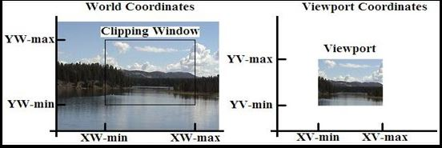

Window
- A world-coordinate area selected for display is called a window.
- In computer graphics, a window is a graphical control element.
- It consists of a visual area containing some of the graphical user interface of the program it belongs to and is framed by a window decoration.
- A window defines a rectangular area in world coordinates. You define a window with a GWINDOW statement. You can define the window to be larger than, the same size as, or smaller than the actual range of data values, depending on whether you want to show all of the data or only part of the data.
ViewPort
- An area on a display device to which a window is mapped is called a viewport.
- A viewport is a polygon viewing region in computer graphics. The viewport is an area expressed in rendering-device-specific coordinates, e.g. pixels for screen coordinates, in which the objects of interest are going to be rendered.
- A viewport defines in normalized coordinates a rectangular area on the display device where the image of the data appears. You define a viewport with the GPORT command. You can have your graph take up the entire display device or show it in only a portion, say the upper-right part.
Window to Viewport transformation

- Window-to-Viewport transformation is the process of transforming a two-dimensional, world-coordinate scene to device coordinates.
- In particular, objects inside the world or clipping window are mapped to the viewport. The viewport is displayed in the interface window on the screen.
- In other words, the clipping window is used to select the part of the scene that is to be displayed. The viewport then positions the scene on the output device.
Step 1
- The object with its window is shifted or translated untill the lower left corner of the window matches to the origin.
Step 2
- The object and the window are now scaled until the window has the dimension same as viewport. In other words we are converting the object into image and window in viewport.For this we have to use scaling.
Step 3
- Now perform another translation to move the viewport to its correct position on the screen.
 Scaling Factor
Scaling Factor
- Sx=width of viewport/width of window
- Sy=height of viewport/height of window
Scaling matrix
-
- Sx = x vmax -x vmin / x wmax-x wmin
- Sy = yvmax-yvmin/ywmax-ywmin
 Translation Factor
Translation Factor
- Tx = xwmax.xvmin-xwmin.xvmax / xwmax-xwmin
- Ty = ywmax.yvmin-ywmin.yvmax / ywmaz-ywmin